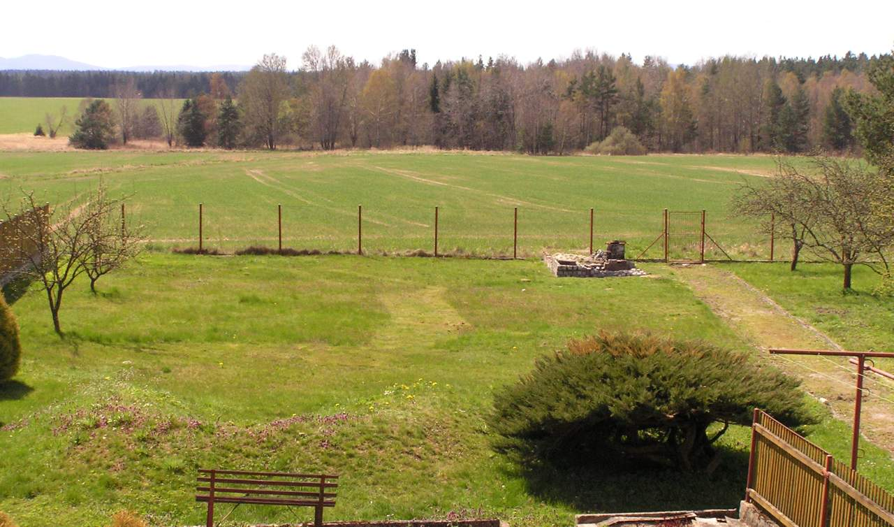
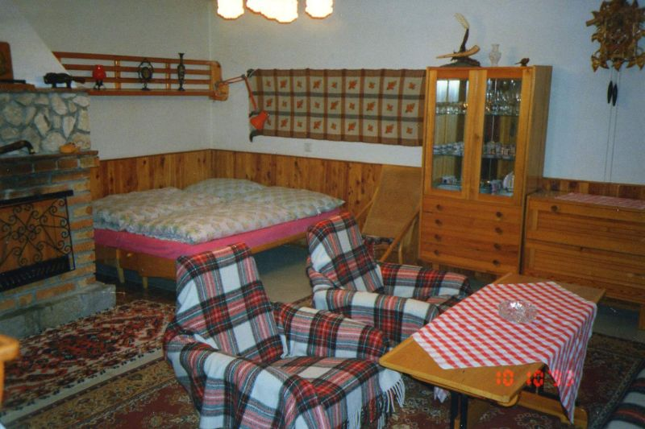
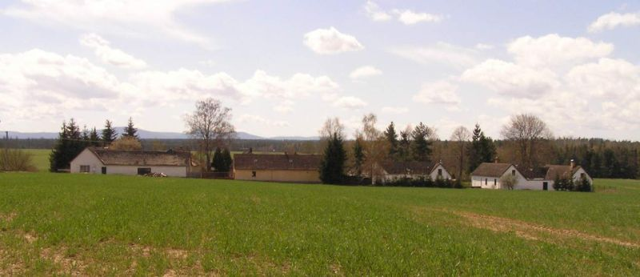

Ubytování – Jižní Čechy – Třeboňsko - Ondřej Žižka
2012-12-13
Ubytování – Jižní Čechy – Třeboňsko

Nabízíme ubytování v chalupě v Jižních Čechách na třeboňsku.
Rekonstruovaný bývalý statek se třemi komfortními velkými místnostmi:

- Vybavená kuchyně s kamny
- Vybavený obývací pokoj (28 m2) se dvěma postelemi
- Možnost rozložení gauče na třetí širokou postel
- Krb
- Televize + video
- Kukačky :-)
- Další místnost (28 m2) s jedním dvojlůžkem a možností přistýlky
- Koupelna s vanou
- …a další místnosti (spíž, předsíň, denní pokoj, kuřárna)
Co ještě chalupa nabízí?
- Auto můžete schovat před letními kroupami do garáže.
- Vaše děti mohou dovádět se psem na veliké udržované zahradě.
- Na jihu se můžete kochat krásným výhledem na Novohradské hory.
- Navečer si můžete připravit posezení u grilu (uhli k dispozici) nebo opékání špekáčků u ohýnku (dřevo k dispozici).
Chaloupka se nachází na konci malé klidné vesnice.
Co najdete v okolí:
- Na severu můžete jít na procházku do rozlehlého udržovaného borového lesa s bohatou úrodou borůvek, brusinek a hub
- Na jihu je Národní přírodní rezervace Červené blato
- Na východě Suchdol nad Lužnicí a nedaleko něj vyhlášené přírodní koupaliště Suchdolské pískovny
- Dále na severovýchodě je CHKO Třeboňsko (další stránky o CHKO v angličtině).
- Ideální krajina pro cyklistiku – klidné silnice, spíše roviny a mírné kopečky
Kapacita
Oficiálně nabízíme tři místa. Pro tři osoby nabízí chalupa komfortní bydlení – pro každého jednu postel a dostatek teplé vody. Pokud by vás bylo více, další dvě osoby se po dohodě mohou ubytovat v podobné chalupě hned vedle – zařídíme, domluvíme, kontakt předáme. V případě zájmu se mohou ubytovat i větší skupiny – místa je dost.

Kontakt:
Telefon: 608 903 585, nebo viz stránka kontakty.